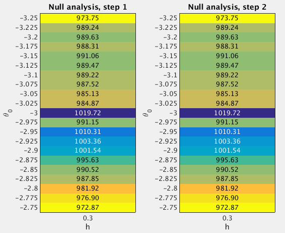

15.2 GSEA Round 2
Last updated: 2017-01-04
Code version: 8b2ddba5ecb1744a3c9fafe983462d9e2ea6e2f5
15.2.1 Fit the null model
From the Round 1 null analysis (Section 15.1), I found that almost 99.9% posterior mass is concentrated on the setting (h=0.3, theta0=-3). In Round 2, I used a finer grid. Specifically, I used the grids theta0=(-3.25:0.025:-2.75)' and h=0.3 when fitting the null model. I estimated the (unnormalized) log importance weights (“pseudo-likelihoods”) for all 21 sets of (h,theta0) under null.

After normalizing the log “pseudo-likelihoods” (logw.step*) to posterior probabilities (posp.step*), we can see that almost 99.99% posterior mass is concentrated on the setting (h=0.3, theta0=-3).
theta0.index <- as.character(null.df$theta0) %in% as.character(-3)
sum(null.df$posp.step2[theta0.index]) ## [1] 0.999918215.2.2 Fit the enrichment model
To perform GSEA, I set (h=0.3, theta0=-3), since the null analysis suggests that almost 100% posterior mass is placed on this setting. For the log-fold enrichment parameter, I use the grid theta=(0:(2/200):2)', based on the Round 1 enrichment analysis (Section 15.1). The following table lists the GSEA results.
Now we compare the enrichment Bayes factors from Round 1 and 2 analyses.